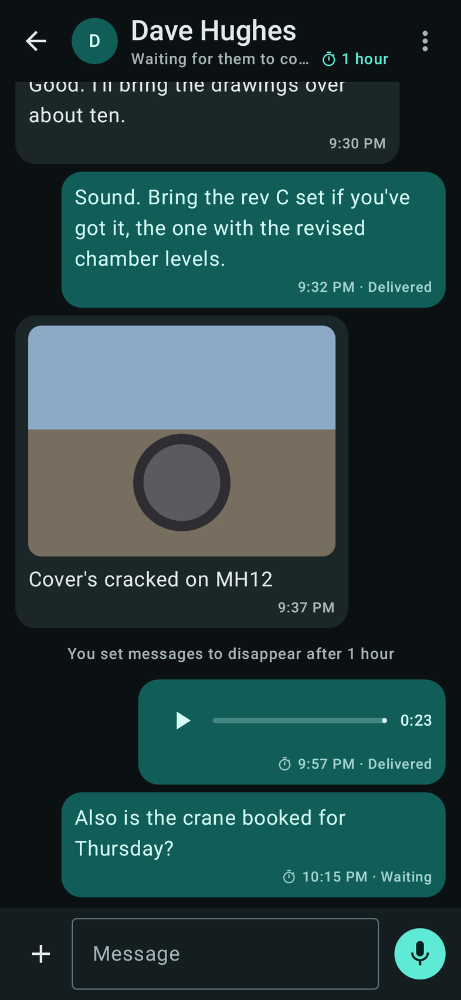
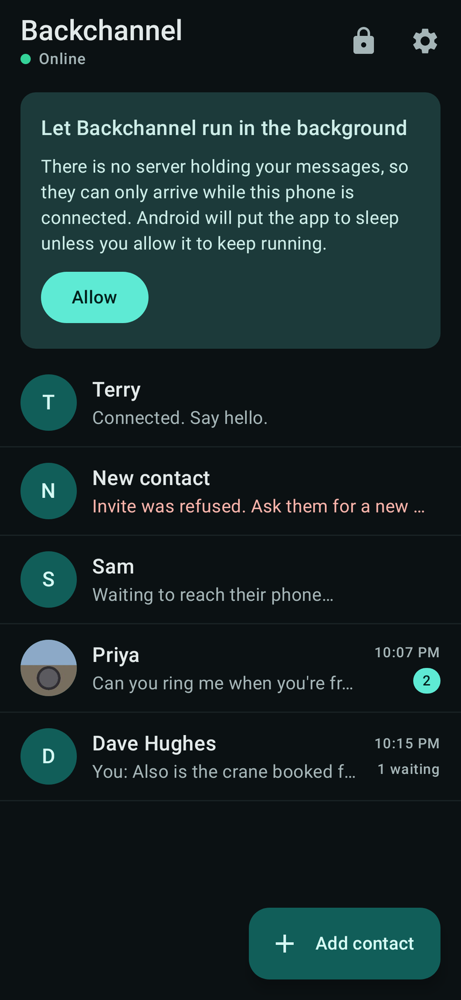
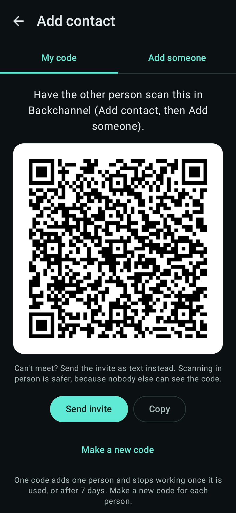
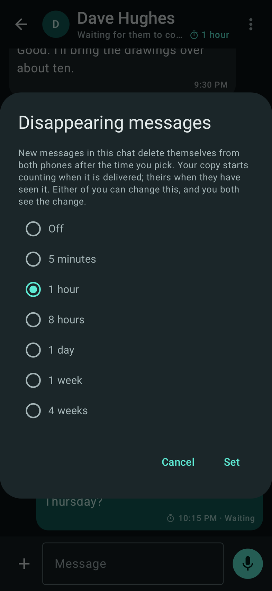
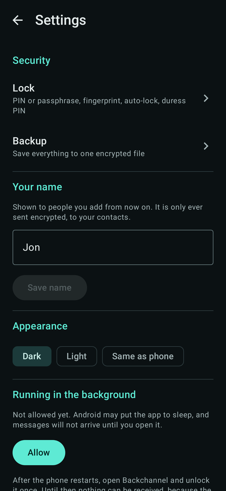
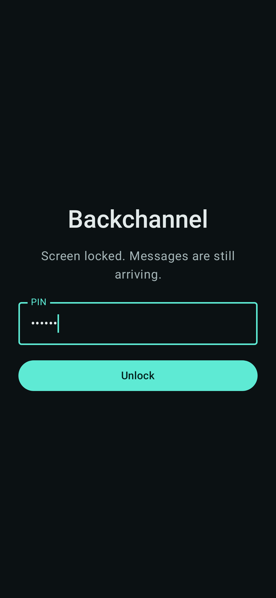
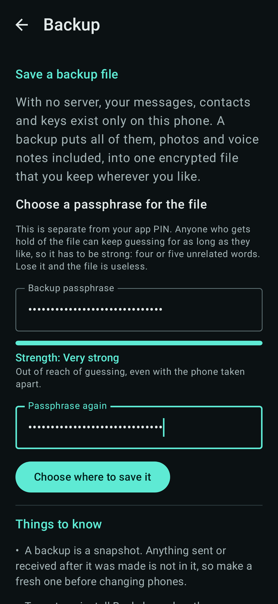
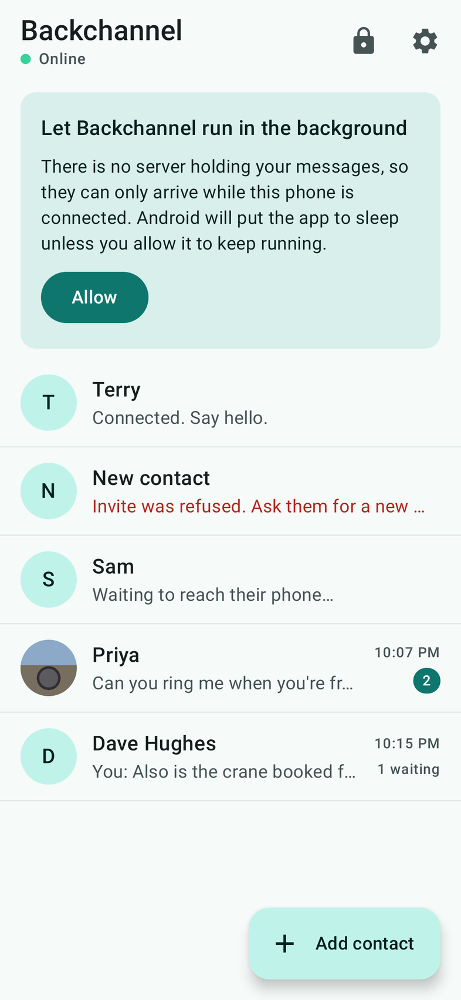

Private messages, phone to phone.
Backchannel is an Android messenger with no server. Every message is encrypted on your phone and goes straight to the other person's phone across the Tor network. Nothing is stored anywhere in between, because there is nowhere in between.
It is free, with no adverts, no account and no phone number. The price of having no server is that both phones have to be online for a message to cross.
Private messaging is lawful, and so must be what you send. What the law says
- Version 0.3
- Android 10 or later
- 35 MB
Free, with nothing to unlock. No adverts, no account with the developer, no tracking. Compare or read the release notes.
Chrome may say the file might be harmful. It shows this for app files that do not come from Google Play. Choose Download anyway.

- No serverNothing in between to hack or hand over.
- No phone numberContacts are added face to face or by invite.
- Signal ProtocolEnd-to-end encryption, over Tor.
- Open sourceThe code for this version is public.
A look inside
These are the real screens, drawn from the app's own code with made-up contacts and messages. Swipe or scroll sideways to see them all.







How it works
Most messengers pass your messages through a company's computers. Backchannel has none. Each phone is its own post office.
Add someone
Scan each other's code in person, or send an invite that works once and runs out after seven days.
Write
The message is locked on your phone with the Signal Protocol and sent across Tor to the other phone.
It arrives
If their phone is online it arrives at once. If not, it waits on your phone and goes when you are both online.
Everything is in, and all of it is free
Nothing below is held back for a paid tier, because there is no paid tier.
Messages
- Text, photos and voice notes
- With Delivered and Waiting marks, so you know where each one is.
- Disappearing messages
- From five minutes to four weeks, set for each chat and seen by both sides.
- No phone number, no account
- Contacts are added by code or invite. Nobody can look you up.
Privacy
- No server at all
- Messages go phone to phone across Tor, as an onion service on each phone.
- Encrypted at rest
- Messages and keys are kept in an encrypted database, locked by your PIN and the phone's own security chip.
- A duress PIN
- A second PIN that wipes Backchannel instead of opening it.
Keeping it
- Lock and auto-lock
- PIN, passphrase or fingerprint, and a lock after a set time.
- Backup in one file
- Messages, contacts and keys in one encrypted file, under a passphrase of its own.
Nothing in between
No servers
There is no Backchannel server. The developer cannot see, store or hand over anything.
Tor all the way
Your phone company and Wi-Fi owner see Tor traffic, not who you talk to.
No ads, no tracking
There is no advertising, analytics or tracking, in the app or on this site.
Use it within the law
Backchannel keeps your messages private. It does not make anything you send lawful. Use it only for lawful messages, and only with people who have agreed to hear from you.
- Malicious Communications Act 1988 and Communications Act 2003, section 127. Sending messages that are grossly offensive, threatening or false to cause distress is a crime, encrypted or not.
- Protection from Harassment Act 1997. Repeated unwanted messages can be harassment.
- Regulation of Investigatory Powers Act 2000, Part III. You can be ordered by law to disclose a PIN, passphrase or key, and refusing can be an offence.
- Serious Crime Act 2015 and the wider criminal law. Using a messenger to plan or carry out a crime is itself a crime.
Laws differ in other countries. If you are not in the UK, the rules where you are apply. Read the terms of use.
Installing and updating
Backchannel is not on Google Play, so your phone asks a couple of extra questions the first time.
Download the app file
Tap Download on your phone. The file is called Backchannel.apk and is about 35 MB. If Chrome says the file might be harmful, choose Download anyway. First tick the box to say you will use the app within the law.
Allow the install
Open the file. The first time, Android asks you to allow your browser to install apps. Allow it, go back and tap Install. If Google Play Protect steps in, choose More details, then Install anyway.
Updating later
Backchannel tells you when a newer version is out. Install the new file over the old one and everything you have saved is kept.
Version 0.3, released 19 November 2026. See the release notes, or check your download.
Questions
Is Backchannel really free?
Yes. There is no paid version, no subscription and no adverts, and nothing in the app is locked away.
Is Backchannel on Google Play?
No. Backchannel is a personal project and is downloaded from this site as an Android app file. It needs Android 10 or later.
Is there an iPhone version?
No. An iPhone shuts down apps that are not on screen, and with no server to hold messages an iPhone could only receive them while the app was open. Backchannel is Android only.
Do I need a phone number or an account?
No. There is no sign-up of any kind. You add someone by scanning a code on their screen or by pasting an invite they send you, and that is all either phone ever knows about the other.
Why did my message say Waiting?
Because the other phone is not reachable at the moment. With no server in the middle there is nowhere for a message to sit except on your own phone, so it waits there and sends itself as soon as both phones are online and connected to Tor. It is marked Delivered only when the other phone confirms it.
Why is it slower than other messengers?
Messages travel through Tor, which passes them through several computers around the world so that nobody on the way can tell who is talking to whom. A text message usually takes a few seconds. A photo can take ten to thirty.
Why does it show a permanent notification and use more battery?
To be reachable, your phone has to stay connected to Tor, and Android only allows an app to keep running in the background if it shows a notification. Staying connected uses more battery than an app that waits for a server to wake it.
What can my phone company or Wi-Fi owner see?
That your phone is using Tor, and roughly how much data. They cannot see that it is Backchannel, who you are talking to, or anything that is said.
What do I need to do after the phone restarts?
Open Backchannel and unlock it once. The key that opens your messages is not kept in memory across a restart, so nothing can arrive until you do. The app puts up a notification to remind you.
What if I forget my PIN or passphrase?
There is no reset, no account and no recovery code. Without it your messages and contacts cannot be opened by anyone, including the developer. You would have to clear the app's storage and start again.
How do I move to a new phone?
On the old phone go to Settings, Backup, and save a backup file with a passphrase of its own. On the new phone install Backchannel and tap Restore from a backup file on the first screen. Then remove Backchannel from the old phone. A backup must only ever be running on one phone.
What does the duress PIN do?
It is a second PIN that you choose. Typing it at the lock screen destroys every message, contact and key within seconds and opens the app as if it had just been installed. There is no warning and no undo. Nothing else triggers it, so it cannot go off by accident.
How do updates work?
Once a day, and whenever you tap Check now in Settings, Backchannel asks GitHub over Tor whether a newer version has been published and tells you if so. You download it from this site and install it over the one you have. Every version is signed with the same key, and Android refuses an update signed with any other, which is what stops a fake update being slipped onto a phone.
Is Backchannel unhackable?
No app can honestly promise that. Backchannel uses well-studied building blocks, but the app itself is new, is at an early version, and has not had an independent security review. It cannot protect you from spy software on your own phone, from someone who has your unlocked phone in their hand, or from the person you are talking to. Its source code is public so that anyone can check it.
Private messages, with nowhere in between
Free, with no adverts and nothing to unlock. Made by the developer of several other free Android apps: see them all.